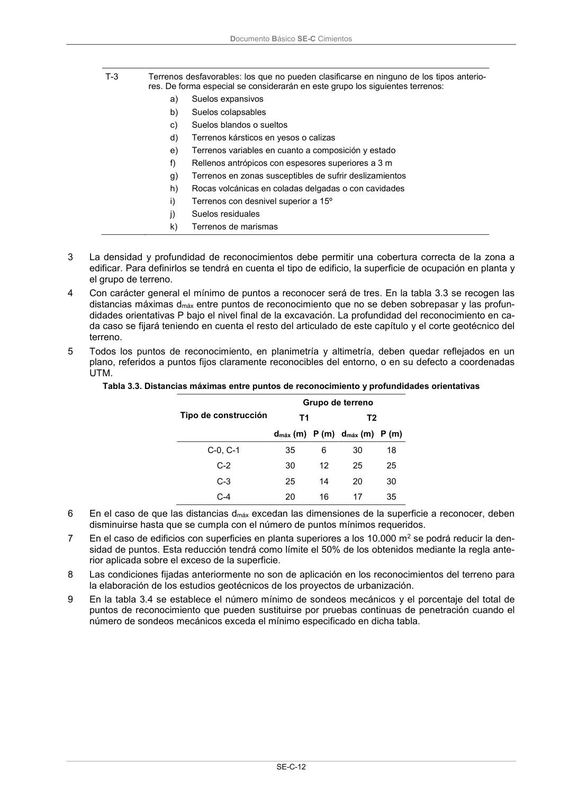
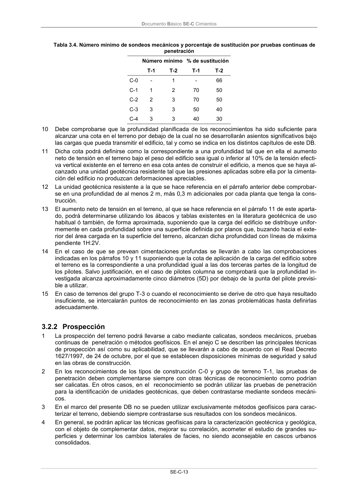

DB-SE-C Cimientos · edición 2019-12-20 · capa oficial
Documento DB-SE-C-oficial · SHA-256 del PDF a71133f4b0dca253e45ea3071c70f2a512354bcc5cd841bf89b1a502f567ac5e
Copia fiel del PDF fuente · Fuente oficial
Ficha de la disposición en la fuente oficial
Formatos: JSON del segmento · Markdown
Reconocimiento del terreno 3.2.1 Programación 3.2.1 Programación 1 Para la programación del reconocimiento del terreno se deben tener en cuenta todos los datos rele- vantes de la parcela, tanto los topográficos o urbanísticos y generales del edificio, como los datos previos de reconocimientos y estudios de la misma parcela o parcelas limítrofes si existen, y los ge- nerales de la zona realizados en la fase de planeamiento o urbanización. 2 A efectos del reconocimiento del terreno, la unidad a considerar es el edificio o el conjunto de edifi- cios de una misma promoción, clasificando la construcción y el terreno según las tablas 3.1 y 3.2 respectivamente. Tabla 3.1. Tipo de construcción Tipo Descripción (1) C-0 Construcciones de menos de 4 plantas y superficie construida inferior a 300 m2 C-1 Otras construcciones de menos de 4 plantas C-2 Construcciones entre 4 y 10 plantas C-3 Construcciones entre 11 a 20 plantas C-4 Conjuntos monumentales o singulares, o de más de 20 plantas. (1) En el cómputo de plantas se incluyen los sótanos. Tabla 3.2. Grupo de terreno Grupo Descripción T-1 Terrenos favorables: aquellos con poca variabilidad, y en los que la práctica habitual en la zona es de cimentación directa mediante elementos aislados. T-2 Terrenos intermedios: los que presentan variabilidad, o que en la zona no siempre se recurre a la misma solución de cimentación, o en los que se puede suponer que tienen rellenos antrópicos de cierta relevancia, aunque probablemente no superen los 3,0 m. Documento Básico SE-C Cimientos SE-C-12 T-3 Terrenos desfavorables: los que no pueden clasificarse en ninguno de los tipos anterio- res. De forma especial se considerarán en este grupo los siguientes terrenos: a) Suelos expansivos b) Suelos colapsables c) Suelos blandos o sueltos d) Terrenos kársticos en yesos o calizas e) Terrenos variables en cuanto a composición y estado f) Rellenos antrópicos con espesores superiores a 3 m g) Terrenos en zonas susceptibles de sufrir deslizamientos h) Rocas volcánicas en coladas delgadas o con cavidades i) Terrenos con desnivel superior a 15º j) Suelos residuales k) Terrenos de marismas 3 La densidad y profundidad de reconocimientos debe permitir una cobertura correcta de la zona a edificar. Para definirlos se tendrá en cuenta el tipo de edificio, la superficie de ocupación en planta y el grupo de terreno. 4 Con carácter general el mínimo de puntos a reconocer será de tres. En la tabla 3.3 se recogen las distancias máximas dmáx entre puntos de reconocimiento que no se deben sobrepasar y las profun- didades orientativas P bajo el nivel final de la excavación. La profundidad del reconocimiento en ca- da caso se fijará teniendo en cuenta el resto del articulado de este capítulo y el corte geotécnico del terreno. 5 Todos los puntos de reconocimiento, en planimetría y altimetría, deben quedar reflejados en un plano, referidos a puntos fijos claramente reconocibles del entorno, o en su defecto a coordenadas UTM. Tabla 3.3. Distancias máximas entre puntos de reconocimiento y profundidades orientativas Tipo de construcción Grupo de terreno T1 T2 dmáx (m)P (m)dmáx (m)P (m) C-0, C-1 35 6 30 18 C-2 30 12 25 25 C-3 25 14 20 30 C-4 20 16 17 35 6 En el caso de que las distancias dmáx excedan las dimensiones de la superficie a reconocer, deben disminuirse hasta que se cumpla con el número de puntos mínimos requeridos. 7 En el caso de edificios con superficies en planta superiores a los 10.000 m2 se podrá reducir la den- sidad de puntos. Esta reducción tendrá como límite el 50% de los obtenidos mediante la regla ante- rior aplicada sobre el exceso de la superficie. 8 Las condiciones fijadas anteriormente no son de aplicación en los reconocimientos del terreno para la elaboración de los estudios geotécnicos de los proyectos de urbanización. 9 En la tabla 3.4 se establece el número mínimo de sondeos mecánicos y el porcentaje del total de puntos de reconocimiento que pueden sustituirse por pruebas continuas de penetración cuando el número de sondeos mecánicos exceda el mínimo especificado en dicha tabla. Documento Básico SE-C Cimientos SE-C-13 Tabla 3.4. Número mínimo de sondeos mecánicos y porcentaje de sustitución por pruebas continuas de penetración Número mínimo% de sustitución T-1 T-2 T-1 T-2 C-0 - 1 - 66 C-1 1 2 70 50 C-2 2 3 70 50 C-3 3 3 50 40 C-4 3 3 40 30 10 Debe comprobarse que la profundidad planificada de los reconocimientos ha sido suficiente para alcanzar una cota en el terreno por debajo de la cual no se desarrollarán asientos significativos bajo las cargas que pueda transmitir el edificio, tal y como se indica en los distintos capítulos de este DB. 11 Dicha cota podrá definirse como la correspondiente a una profundidad tal que en ella el aumento neto de tensión en el terreno bajo el peso del edificio sea igual o inferior al 10% de la tensión efecti- va vertical existente en el terreno en esa cota antes de construir el edificio, a menos que se haya al- canzado una unidad geotécnica resistente tal que las presiones aplicadas sobre ella por la cimenta- ción del edificio no produzcan deformaciones apreciables. 12 La unidad geotécnica resistente a la que se hace referencia en el párrafo anterior debe comprobar- se en una profundidad de al menos 2 m, más 0,3 m adicionales por cada planta que tenga la cons- trucción. 13 El aumento neto de tensión en el terreno, al que se hace referencia en el párrafo 11 de este aparta- do, podrá determinarse utilizando los ábacos y tablas existentes en la literatura geotécnica de uso habitual ó también, de forma aproximada, suponiendo que la carga del edificio se distribuye unifor- memente en cada profundidad sobre una superficie definida por planos que, buzando hacia el exte- rior del área cargada en la superficie del terreno, alcanzan dicha profundidad con líneas de máxima pendiente 1H:2V. 14 En el caso de que se prevean cimentaciones profundas se llevarán a cabo las comprobaciones indicadas en los párrafos 10 y 11 suponiendo que la cota de aplicación de la carga del edificio sobre el terreno es la correspondiente a una profundidad igual a las dos terceras partes de la longitud de los pilotes. Salvo justificación, en el caso de pilotes columna se comprobará que la profundidad in- vestigada alcanza aproximadamente cinco diámetros (5D) por debajo de la punta del pilote previsi- ble a utilizar. 15 En caso de terrenos del grupo T-3 o cuando el reconocimiento se derive de otro que haya resultado insuficiente, se intercalarán puntos de reconocimiento en las zonas problemáticas hasta definirlas adecuadamente.

